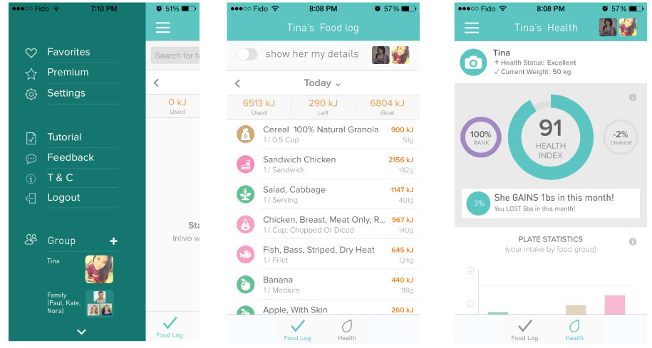
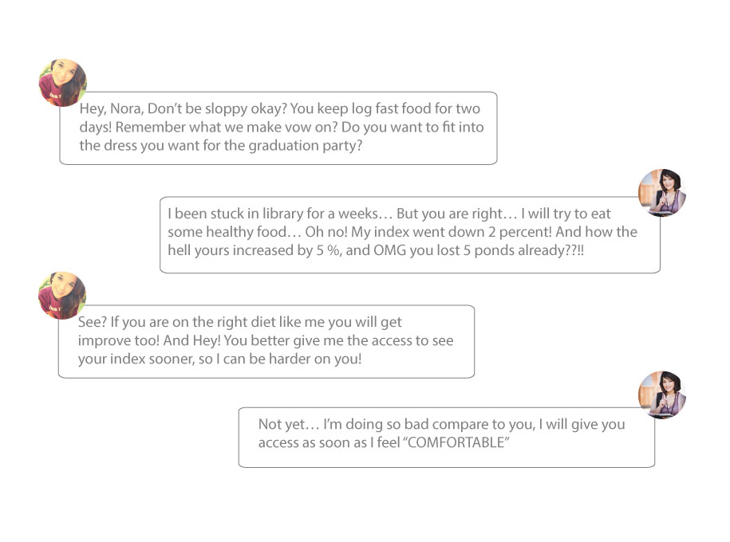
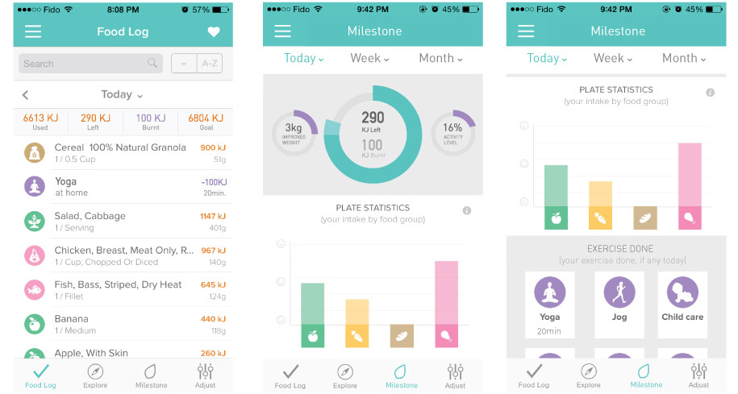
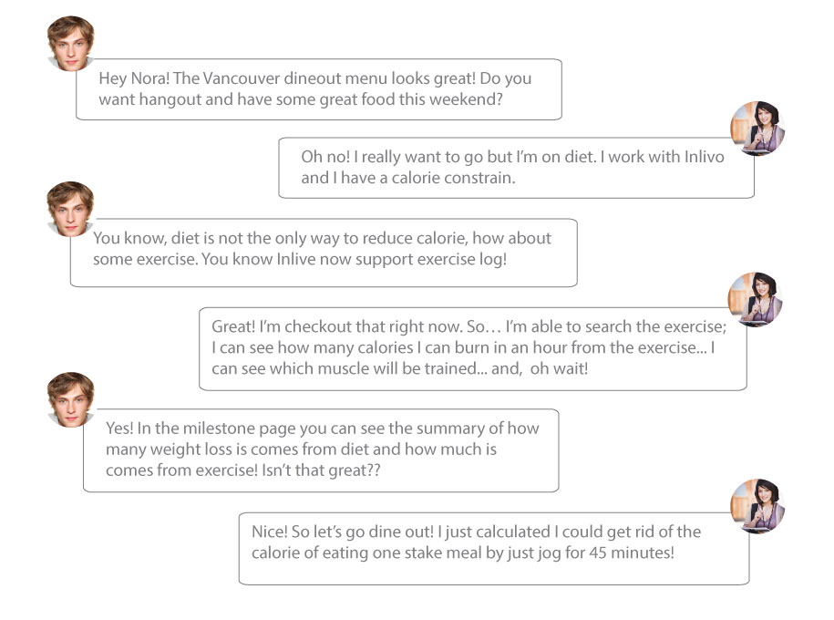

Elevator Pitches
Group
“GROUP” feature gives accesses to a pair, or a small group of Inlivo users to able to view each other’s daily logs and health related index. This function provides users not only the sense of “they are not working alone”, but also a positive pressure out of competing with their buddies.


Milestone
“MILESTONE” feature allow users to easily understand how much of their health index change is from diet, and how much is from exercise. “Exercise log” is introduced to Inlivo, allows users to log the exercises they do. Then users will see the daily, weekly, and monthly summaries about health index changes contributed by both nutrition intake and exercise in the “millstone section. It provides users more options other than nutrition & diet, to accomplish a healthier life style.


Food Editor
“FOOD EDITTING” feature enable users to edit existing food or meals by adding/deleting components or ingredients, as well as create new food or meal by manually enter its ingredients and it’s nutrition factors. This feature will increase the flexibility of logging process, and make the logging experience much smoother.